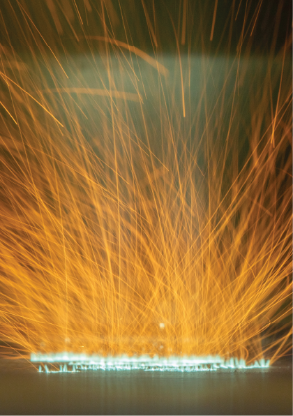

Drukujemy części z metalu metodą topienia laserowego w złożu proszku: dobieramy parametry dla nowych stopów, kompozytów metal-ceramika i proszków dostarczonych przez Państwa.
Urządzenia, na których ta usługa jest wykonywana. Każde ma kartę z parametrami i osobą odpowiedzialną.
Aparat wiodący tej usługi: selektywne topienie laserowe proszków metali z podgrzewaniem do 800°C.
Karta aparatu| Pozostała aparatura | Producent | Zastosowanie | |
|---|---|---|---|
| Reometr Anton Paar MCR 302e | Anton Paar | Analiza proszków w zadanej temperaturze i wilgotności | Karta |
| Analizator wielkości i sferyczności cząstek Kamika Mini 30 | Kamika | Wielkość i sferyczność cząstek | Karta |
| Oprogramowanie inżynierskie | Siemens · Materialise · ANSYS | CAD/CAE · symulacje MES | Karta |
dr inż. Bartłomiej Wysocki
Ekspert — druk 3D, analiza struktury
Formularz trafi bezpośrednio do eksperta, z nazwą usługi już wpisaną.